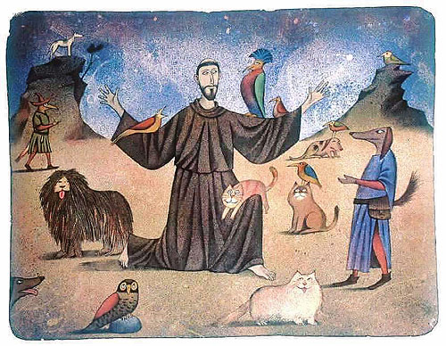
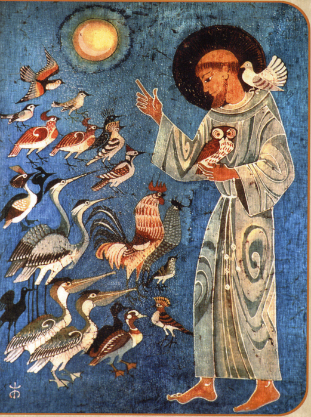

Щоб привернути увагу громадськості до проблематики утримання тварин в зоопарках, в цирках, їх існування в дикому середовищі, товариства захисту тварин багатьох країн світу заявили про готовність щороку організовувати масові заходи для захисту довкілля, підвищення активності в захисті братів наших менших.
4 жовтня – Всесвітній день захисту тварин (World Animal Day)
Пам'ятна дата була затверджена рішенням Міжнародного конгресу прихильників руху захисників природи, що проходив у 1931 році у Флоренції, з метою звернення уваги людства не тільки на власні проблеми, а й інших мешканців планети.
Примітно, дата для цього благого наміру було обрано не випадково. У цей день католики шанують пам'ять святого Франциска Ассизького (1181-1226) - одного з найулюбленіших католицьких святих, покровителя тварин. Більш того, його вважають одним із засновників такого вчення як екологічна етика.

Святий Франциск сприймав природу відображенням свого Творця і називав звірів, птахів, місяць, зірки, воду своїми "братами" і "сестрами", а Землю - "сестрою-матір'ю". Відповідно ставився до них як до своїх близьких родичів, навіть читав проповіді.
Турбота Франциска про тварин привела його до того, що він не вбивав їх, хоча й суворим вегетаріанцем не був. Виступав на захист звірів у неволі, дбав про них або звільняв.
